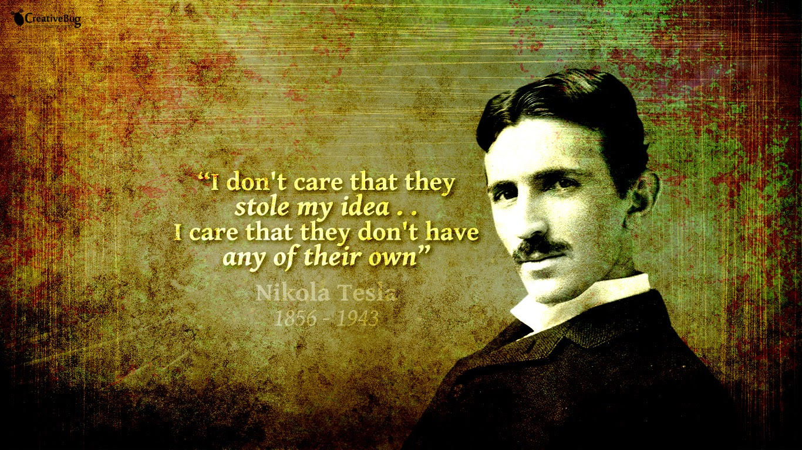

Nikola Tesla
The Forgotten Man
Nikola Tesla was born 10 July 1856 and died on 7 January 1943. He was a Serbian American inventor, electrical engineer, mechanical engineer, physicist, and futurist best known for his contributions to the design of the modern alternating current (AC) electricity supply system.
Tesla gained experience in telephony and electrical engineering before emigrating to the United States in 1884 to work for Thomas Edison in New York City. He soon struck out on his own with financial backers, setting up laboratories and companies to develop a range of electrical devices.
Tesla went on to pursue his ideas of wireless lighting and electricity distribution in his high-voltage, high-frequency power experiments in New York and Colorado Springs, and made early (1893) pronouncements on the possibility of wireless communication with his devices. He tried to put these ideas to practical use in an ill-fated attempt at intercontinental wireless transmission, his unfinished Wardenclyffe Tower project. In his lab he also conducted a range of experiments with mechanical oscillators/generators, electrical discharge tubes, and early X-ray imaging. He also built a wireless controlled boat, one of the first ever exhibited.
Tesla was renowned for his achievements and showmanship, eventually earning him a reputation in popular culture as an archetypal "mad scientist". His patents earned him a considerable amount of money, much of which was used to finance his own projects with varying degrees of success. He lived most of his life in a series of New York hotels, through his retirement. Tesla died on 7 January 1943. He and his work fell into relative obscurity after his death, seemingly ignored by mainstream historians.

Nikola Tesla Timeline
- 1856. Nikola Tesla was born in Smiljan near Gospic, at midnight between 10 and 11 July
- 1862. Tesla enrolled Primary school in Smiljan
- 1863. Elder brother Dane dies and Tesla moves to Gospic to continue his education
- 1870. Tesla leaves primary school in Gospic
- 1873. He graduates from real school (grammar school) at Rakovac near Karlovac
- 1875-78. Tesla studies at Graz Polytechnic Institute
- 1880. He moves to Prague and studies Physics and Mathematics at Karl University
- 1881. Tesla begins the career of an engineer in Budapest
- 1884. Tesla leaves for America and gets a job in Edison’s company
- 1885. He leaves Edison and founds his first company (“Tesla’s electrical light”)
- 1889. He visits the World exhibition in Paris and also visits his birthplace
- 1892. Tesla holds lectures in London and Paris. He breaks off his tour due to his mother’s illness followed by death. He visits his birthplace for the second and last time. He visits Zagreb, Varazdin, Budapest, Belgrade and Vienna
- 1893. The Serbian Royal Academy of Sciences announces Tesla’s appointment for its corresponding member
- 1894. The first book on Tesla and his inventions was published in New York (Thomas Komerford Martin) and in Belgrade (Djordje Stanojevic)
- 1895. The fire which broke out in Tesla’s laboratory in New York destroyed all his apparatus, instruments, documentation, plans etc.
- 1899. He moves to Colorado Springs, where he performs his experiments with high-frequency high-voltage currents
- 1900. Tesla returns to New York and builds a laboratory and aerial on Long Island for the World radio station (1900-1905)
- 1905. Stops with the construction of the Long Island complex and turns to research work in the field of mechanical engineering, and 1929-1935 he works on production and processing of sulfur, iron and copper
- 1936. Tesla is badly injured in a car accident in New York. He never completely recovered from the obtained injuries to the end of his life
- 1943. Nikola Tesla died (7 January) in the New York hotel called “The New Yorker”. His funeral took place on 12 January.